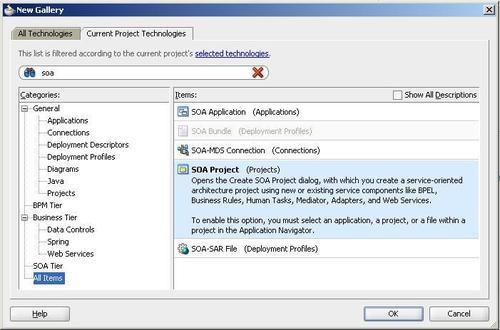
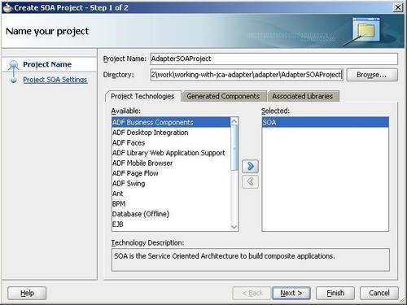
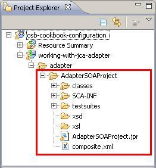
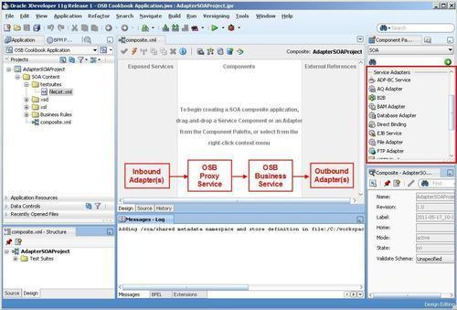

Since Oracle Service Bus 11g, the JCA adapter's framework is available at runtime, but the definition of the adapters through the wizards is only available in JDeveloper and not in Eclipse OEPE. To be able to use the adapters, JDeveloper with the SOA Suite extension installed needs to be available.
This recipe will show the basis for how to use the JCA adapters together with an OSB project. The idea is to avoid having to copy metadata from one place to the other by nesting the JDeveloper project inside the OSB project. This approach will be used by all other recipes working with the JCA adapters, such as the File, DB and AQ adapter recipes.
In order to use this recipe, both a working Eclipse and JDeveloper IDE needs to be available. In JDeveloper, you also need to install the SOA Suite extension.
First we create an empty OSB project with the correct folder structure. In Eclipse OEPE, perform the following steps:
working-with-jca-adapter. adapter folder in the OSB project. adapter folder and select Properties from the context window. adapter folder under Location into the clipboard. We will need it for the location of the SOA project in JDeveloper.Now we switch to JDeveloper and create a SOA project, located inside the adapter folder just created previously. In JDeveloper, perform the following steps:
soa into the search field.
AdapterSOAProject into the Project Name field.

This finishes the basic set up of the AdapterSOAProject nested inside the OSB project. We have not yet created an adapter. This will be shown in many other recipes throughout the book.
We have created a SOA project, which is located inside the adapter folder of the OSB project. Whenever something is changed on the adapters in JDeveloper, or a new adapter is added to the composite, all we have to do is refresh the adapter to have all necessary artifacts available in the OSB project and in Eclipse OEPE.
An empty SCA composite has been created as the base, which can now be used to define the adapters. Every composite has three swim lanes or sections, the Exposed Services located on the left, the External References on the right, and the Components section located in the middle of the composite window.
Think of the Components section as the place where the OSB proxy and business services are located. Using that mnemonic trick we can place the adapters in the same way as we are used to from working with SOA Suite 11g. Inbound adapters (file polling, database polling, and de-queuing) should be placed on the Exposed Services swim lane and outbound adapters (file write, database read/write, and enqueuing) should be placed on the External References swim lane.

Now with the basic project structure in place, we can start using the JCA adapter for either inbound or outbound communication. Check the recipes in the Chapter 6, Using File and Email Transport for the usage of the File adapter, and in Chapter 7, Communicating with the Database for the usage of the DB and AQ adapters. All of these recipes will reuse the basic setup of this recipe.